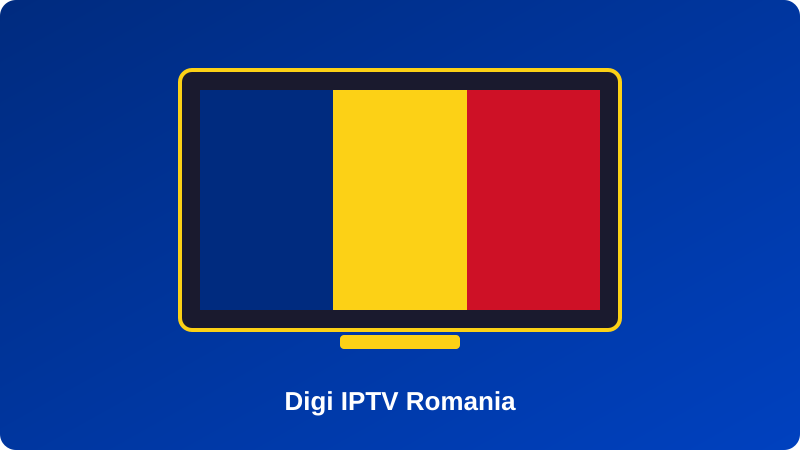
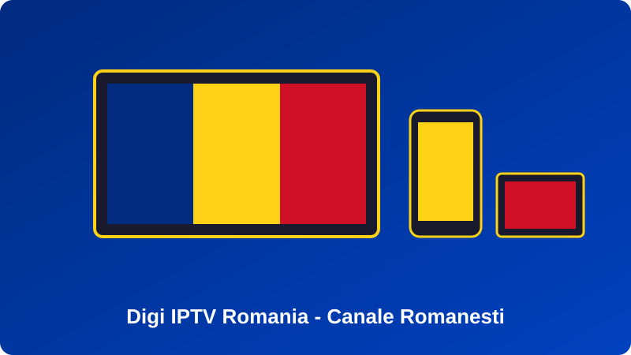

Daca ai cautat digi iptv romania, probabil vrei un lucru simplu: sa vezi canalele romanesti preferate, fara cabluri, fara tehnicieni si fara contracte care te leaga ani la rand. Stirile de seara, filmul de weekend sau meciul cu prietenii ar trebui sa porneasca imediat, pe orice ecran din casa.
Realitatea este ca termenul acopera mai multe lucruri. Unii se gandesc la televiziunea digitala a unui operator din tara, altii la serviciile de televiziune prin internet. Pentru cei plecati la munca, diferenta este mare: cablul unui operator local nu merge in alta tara, in timp ce un abonament IPTV merge oriunde ai internet.
In acest ghid explicam ce inseamna digi iptv romania, cum functioneaza, ce canale poti primi, cum il compari cu cablul si cum eviti listele gratuite nesigure. Echipa Romania IPTV lucreaza zilnic cu familii din Romania si din diaspora, iar sfaturile vin din situatii reale. Daca esti la inceput, citeste mai intai ghidul general despre iptv romania, apoi revino aici pentru detalii.

Cuprins
- Ce inseamna digi iptv romania si de ce este atat de cautat
- Cum functioneaza televiziunea romaneasca prin internet
- Canalele romanesti pe care le poti primi
- Digi iptv romania versus abonamentul de cablu
- Cum configurezi serviciul pe televizor, telefon sau box
- Liste gratuite si riscuri de evitat
- Digi iptv romania pentru diaspora
- Cum alegi un furnizor si ce criterii conteaza
- Intrebari frecvente
- Concluzie
Ce inseamna digi iptv romania si de ce este atat de cautat
Expresia digi iptv romania apare in cautarile romanilor din tara si din strainatate, iar in spatele ei stau de obicei aceleasi nevoi: canale romanesti stabile, imagine clara si un pret fara surprize. Termenul amesteca doua idei, televiziunea digitala clasica si televiziunea livrata prin internet, asa ca o prima clarificare te ajuta sa alegi corect.
IPTV in cuvinte simple
IPTV vine de la Internet Protocol Television. Canalele nu mai ajung prin cablu sau antena, ci prin conexiunea ta de internet, intr-o aplicatie instalata pe televizor, telefon sau box. Nu ai nevoie de tehnician, de priza speciala sau de contract pe adresa.
Digital clasic versus IPTV
Un operator de cablu iti vinde un pachet legat de o locuinta. IPTV iti ofera acces personal, care te urmeaza oriunde ai internet. Pentru cineva care munceste in Germania, Italia sau Spania, diferenta este uriasa.
De ce cauta romanii acest termen
Mai multi oameni vor sa pastreze canalele cu care s-au obisnuit, dar fara obligatiile unui contract clasic. Altii pleaca la munca si vor ca televizorul din chirie sa arate la fel ca cel de acasa.
Ce nu este acest serviciu
Un abonament IPTV independent nu este un produs al unui operator de cablu si nu foloseste decodorul acestuia. Este un serviciu separat, cu suport propriu si activare prin aplicatie.
Cum functioneaza televiziunea romaneasca prin internet
Pentru a intelege avantajele unui serviciu de tip digi iptv romania, merita sa vezi drumul imaginii: un server transmite fluxul, aplicatia il primeste, iar televizorul il afiseaza ca pe orice alt post.
Serverul, aplicatia si ecranul
Furnizorul intretine serverele si lista de canale. Tu instalezi o aplicatie, introduci datele primite si canalele apar in cateva secunde, grupate pe categorii.
Viteza de internet necesara
Pentru HD sunt suficienti aproximativ 10 Mbps, iar pentru 4K circa 25 Mbps. Daca mai multe aparate folosesc reteaua in acelasi timp, aduna cerintele si lasa o rezerva.
Ghidul de programe EPG
Ghidul arata ce ruleaza acum si ce urmeaza pe fiecare post. Este una dintre diferentele dintre un serviciu serios si o lista improvizata.
Wi-Fi sau cablu de retea
Seara, cand toata casa foloseste reteaua, un cablu Ethernet intre router si box elimina majoritatea sacadarilor. Daca ramai pe Wi-Fi, apropie routerul de televizor.
Canalele romanesti pe care le poti primi
Prima intrebare la orice varianta de digi iptv romania este ce posturi primesti de fapt. Un pachet complet trebuie sa acopere stirile, filmele, sportul, emisiunile de divertisment si desenele animate in limba romana.
Stiri si actualitate
Posturile de stiri sunt cele mai urmarite de diaspora. Jurnalul de seara ramane, pentru multi, ritualul care leaga familia de casa.
Filme, seriale si divertisment
Telenovelele, filmele de seara si emisiunile de weekend fac diferenta dintre un pachet bun si unul mediocru. Cere lista completa si bifeaza posturile pe care le vezi zilnic.
Sport si evenimente live
Meciurile consuma multa banda, deci stabilitatea serverului conteaza cel mai mult. Testeaza serviciul intr-o seara cu meci inainte sa platesti.
Canale pentru copii si muzica
Desenele in limba romana ajuta copiii nascuti in strainatate sa pastreze limba. Posturile muzicale completeaza pachetul pentru toata familia. Lista detaliata o gasesti in ghidul iptv romania.
Digi iptv romania versus abonamentul de cablu
Multe familii se intreaba daca merita sa schimbe cablul cu un serviciu digi iptv romania. Raspunsul depinde de buget, de locul in care locuiesti si de cate ecrane folosesti. Tabelul rezuma diferentele principale.
| Criteriu | Cablu clasic | Abonament IPTV |
|---|---|---|
| Folosire in strainatate | De obicei imposibila | Oriunde ai internet |
| Instalare | Tehnician la domiciliu | Aplicatie, in cateva minute |
| Contract | Adesea pe termen fix | Flexibil, cu test gratuit |
| Mutare in alt oras sau tara | Contract nou | Acelasi cont |
| Dispozitive | Decodor propriu | TV, telefon, box, laptop |
Costuri si flexibilitate
Un abonament IPTV nu cere taxe de instalare sau echipament scump. Il poti opri sau schimba fara penalizari, lucru important mai ales daca locuiesti in chirie.
Mobilitate
Daca te muti dintr-o tara in alta, contul te urmeaza. Nu mai astepti programari si nu mai platesti mutarea unui serviciu legat de adresa.
Cand ramane cablul o varianta buna
Daca locuiesti in Romania, ai internet slab si vrei doar cateva canale de baza, cablul poate fi suficient. In rest, IPTV aduce mai multa libertate si mai multe dispozitive.
Cum configurezi serviciul pe televizor, telefon sau box
Configurarea unui serviciu digi iptv romania este mai simpla decat pare. Dupa ce primesti datele de acces, urmezi cativa pasi si imaginea porneste.
Pasii de baza
Instaleaza o aplicatie IPTV din magazinul aparatului, deschide sectiunea pentru adaugarea unui cont sau a unei liste, introdu datele exact cum le-ai primit, salveaza si asteapta incarcarea canalelor. La final, creeaza o lista de favorite.
Smart TV si Android TV box
Majoritatea televizoarelor moderne accepta aplicatii IPTV direct. Un box Android ieftin transforma si un televizor mai vechi intr-unul inteligent. Daca ai un decodor, citeste si digi iptv box.
Telefon, tableta si laptop
Aplicatiile mobile merg pe Android si iOS. Sunt utile in calatorii sau cand vrei un meci in alta camera, fara sa ocupi televizorul.
Ce faci daca nu ai televizor inteligent
Un box Android costa putin si se conecteaza prin HDMI la orice televizor mai nou. Il configurezi o singura data, apoi pornesti direct in aplicatie la fiecare utilizare. Si un stick de streaming poate face acelasi lucru, fara cabluri in plus pe birou.
Greseli frecvente
Cea mai comuna greseala este un spatiu in plus la finalul adresei. Urmeaza datele copiate incomplet de pe telefon si aplicatiile fara permisiuni de retea. O verificare de un minut rezolva aproape orice.
Liste gratuite si riscuri de evitat
Cautarea digi iptv romania te poate duce pe pagini care promit liste gratis si mereu actualizate. Majoritatea sunt instabile si nu ofera niciun suport. Pentru mai multe detalii despre acest tip de liste, citeste articolul daily iptv list.

Linkuri moarte si calitate variabila
Listele publice se strica des, iar nimeni nu raspunde cand ceva nu merge. Problema se vede cel mai bine seara, la ore de varf.
Costul ascuns al listelor gratuite
O lista gratuita pare avantajoasa pana in seara in care meciul sau filmul se opreste la mijloc. Timpul pierdut cu cautarea unei alte liste, reinstalarea aplicatiilor si frustrarea familiei costa mai mult decat un abonament lunar corect.
Securitatea dispozitivului
Fisierele din surse neverificate pot ascunde reclame agresive sau programe nedorite. Foloseste doar aplicatii din magazinul oficial si nu introduce date de card pe pagini necunoscute.
Lipsa suportului
Fara un contact real pierzi timp cautand alta lista in loc sa urmaresti emisiunea dorita. Un furnizor serios raspunde in limba romana.
Digi iptv romania pentru diaspora
Pentru un roman din Germania, Belgia, Italia, Spania sau Marea Britanie, un serviciu digi iptv romania inseamna legatura zilnica cu casa. Distanta si fusul orar fac stabilitatea si mai importanta, iar suportul in limba romana economiseste timp.
Internet in strainatate
Serviciul merge oriunde ai o conexiune buna, fara antena si fara operator local. Poti pastra aceleasi canale indiferent de tara in care locuiesti.
Familia in jurul televizorului
Bunicii vor jurnalul, copiii vor desene, iar parintii vor filme. O sursa stabila face ca seara sa treaca fara griji.
Cum se descurca alte comunitati
Si alte comunitati folosesc servicii dedicate. Poti vedea abordarea la greek iptv sau la tilaa iptv si sa compari cu ce primesti la Romania IPTV.
Ce spun cei plecati de acasa
Cei mai multi romani din strainatate spun ca televizorul in limba romana este primul lucru pe care il pornesc seara. Un jurnal sau o emisiune cunoscuta creeaza o stare de acasa, iar copiii invata limba prin desene si filme romanesti. Pentru multe familii, acesta este motivul principal pentru care aleg un abonament stabil.
Mai multe ecrane in aceeasi casa
Spune de la inceput cate aparate folosesti simultan. Numarul de conexiuni se stabileste la comanda si poate fi marit ulterior.
Cum alegi un furnizor si ce criterii conteaza
La final, alegerea unui serviciu digi iptv romania se reduce la cateva criterii simple. Daca le verifici pe toate inainte de plata, riscul de dezamagire scade mult.
Test gratuit inainte de plata
Un furnizor serios iti permite sa testezi serviciul. La Romania IPTV testul se cere pe WhatsApp, fara card si fara contract.
Suport in limba romana
Cand apare o problema, vrei un raspuns rapid, in limba ta. Verifica ca exista un contact real, nu doar un formular.
Stabilitate in orele de varf
Testeaza seara, intre 19 si 23, cand serverele sunt cele mai solicitate.
Intrebari de pus inainte de comanda
Intreaba cate conexiuni simultane primesti, daca exista ghid de programe, in cat timp raspunde suportul si cum se face reinnoirea. Un furnizor sigur pe serviciul lui raspunde clar la fiecare dintre aceste intrebari, fara sa eludeze subiectul.
Pret corect
Compara pretul cu numarul de canale, cu calitatea HD si cu numarul de conexiuni, nu doar cu cifra de pe pagina.
Vrei canale romanesti care merg in fiecare seara?
Scrie-ne pe WhatsApp si primesti un test gratuit cu Romania IPTV: fara card, fara contract, cu suport in limba romana.
Cere test gratuit pe WhatsAppIntrebari frecvente
Ce inseamna digi iptv romania?
Este modul in care romanii numesc televiziunea digitala cu canale romanesti livrata prin internet. Functioneaza printr-o aplicatie, fara antena si fara cablu.
Pot vedea canale romanesti in strainatate?
Da. Serviciul depinde doar de internet, deci merge in orice tara, inclusiv pentru romanii din diaspora.
Ce viteza de internet am nevoie?
Aproximativ 10 Mbps pentru HD si circa 25 Mbps pentru 4K. Daca folosesti mai multe aparate, aduna cerintele.
Cum primesc un test gratuit?
Scrie-ne pe WhatsApp, spune ce aparat folosesti si primesti acces de test fara card si fara contract.
Pot folosi serviciul pe mai multe dispozitive?
Da, in limita conexiunilor din abonament. Numarul se stabileste la comanda si poate fi marit.
Ce aparate sunt compatibile?
Smart TV, Android TV box, telefoane si tablete Android sau iOS, laptopuri si alte aparate care accepta aplicatii IPTV.
Sunt sigure listele gratuite?
Nu intotdeauna. Pot contine linkuri moarte sau cer instalari dubioase. Alege un furnizor cu suport si test gratuit.
Ce fac daca un canal nu porneste?
Reporneste aplicatia si routerul, verifica internetul, apoi scrie-ne pe WhatsApp pentru ajutor in limba romana.
Concluzie
Pe scurt, digi iptv romania inseamna televiziune romaneasca prin internet, pe toate ecranele din casa. Pentru diaspora este solutia cea mai flexibila, iar pentru cei din tara este o alternativa la cablul clasic. Evita listele gratuite instabile, testeaza serviciul seara, in orele de varf, si alege un furnizor care raspunde in limba romana.
Daca vrei sa incerci, scrie-ne pe WhatsApp si porneste-ti canalele cu Romania IPTV.
Citeste in continuare: digi iptv, digi iptv box si daily iptv list.